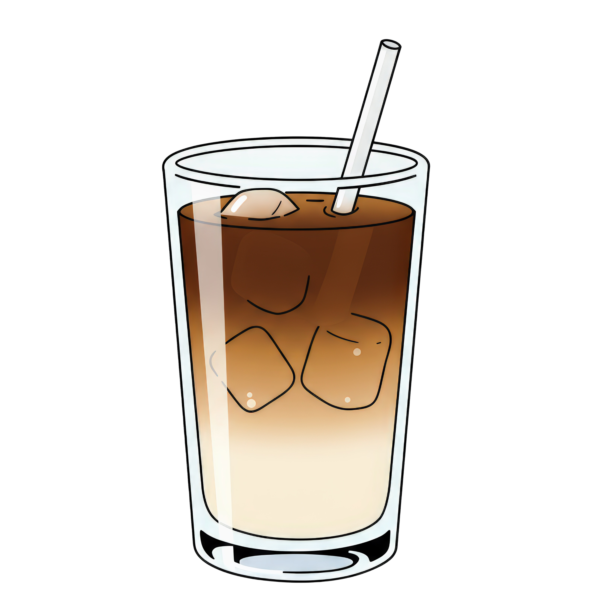

Iced lattes are so good because they’re refreshing and energizing at the same time; cold, creamy, and just caffeinated enough to wake you up without feeling heavy. Plus, you can customize them endlessly with different milks, syrups, and flavors, so they always fit your mood, whether you’re feeling classic, sweet, or a little adventurous
Some examples of flavors I like are:
Click Here for the recipies
For an iced latte that doesn’t taste watered down, a great rule of thumb is about 1 part ice to 1–1.5 parts liquid coffee/milk combined.
More specifically:
The key is using strong coffee and enough ice to keep it cold without melting instantly—too little ice melts fast and dilutes everything, but too much ice leaves you with a sad, milky sip. Balance = peak iced latte vibes
For a classic, perfectly balanced latte, the sweet spot is about 1 part espresso to 3–4 parts milk.
That usually looks like:
This ratio lets the espresso flavor shine without overpowering the drink, while the milk adds creaminess and just enough sweetness. Want it bolder? Use less milk. Want it smoother and more mellow? Add a splash more milk. Latte perfection is all about dialing it to your taste
Iced chai latte
Iced matcha latte